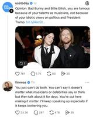

0

0
0
A sprawling informal economy of rogue streaming devices has taken hold across the U.S., as consumers fed up with rising TV subscription costs turn to cheap Android-based boxes that promise free access to thousands of live channels, sports events, and on-demand movies for a one-time $200 to $400 purchase.
The two dominant players -- SuperBox and vSeeBox -- are manufactured by opaque Chinese companies and distributed through hundreds of American resellers at farmers markets, church festivals and Facebook groups, according to a report by The Verge. The hardware is generic and legal, but both devices guide users toward pirate streaming apps not available on any official app store.
vSeeBox directs users to a service called "Heat"; SuperBox points to "Blue TV." One user estimated access to between 6,000 and 8,000 channels, including premium sports networks and hundreds of local affiliates. A 2025 Dish Network lawsuit against a SuperBox reseller alleged that some live channels on the device were being ripped directly from Dish's Sling TV service -- Sling's logo was still visible on certain feeds. Dish has pursued resellers aggressively, winning $1.25 million in damages from a vSeeBox seller in 2024 over 500 devices and $405,000 from another over 162 devices. None of this has meaningfully slowed adoption. The market has roots in earlier Chinese-made devices like TVPad that targeted Asian expat communities and reportedly sold 3 million units before being litigated out of existence. SuperBox and vSeeBox simply broadened the audience to mainstream America.
Read more of this story at Slashdot.
Anthropic said today that its AI assistant Claude will not carry advertising of any kind -- no sponsored links next to conversations, no advertiser influence on the model's responses, and no unsolicited third-party product placements -- calling Claude a "space to think" that should remain free of commercial interruption. The announcement comes days after Anthropic's chief rival, OpenAI, announced plans to bring ads to some of its ChatGPT offerings.
Anthropic said its internal analysis of Claude conversations found that a significant share involve sensitive or deeply personal topics. An advertising-based model would also create incentives to optimize for engagement and time spent rather than usefulness, Anthropic said, noting that the most helpful AI interaction might be a short one that doesn't prompt further conversation.
Anthropic generates revenue from enterprise contracts and paid subscriptions. The company said it is exploring agentic commerce -- Claude handling a purchase or booking on a user's behalf -- but stressed that all such interactions should be user-initiated, not advertiser-driven. Anthropic has also brought AI tools to educators in over 60 countries and said it may consider lower-cost subscription tiers and regional pricing.
Read more of this story at Slashdot.
Pinterest has sacked two engineers for tracking which workers lost their jobs in a recent round of layoffs. BBC: The company recently announced job cuts, with chief executive Bill Ready stating in an email he was "doubling down on an AI-forward approach," according to an employee who posted some of the memo on LinkedIn.
Pinterest told investors the move would impact about 15% of the workforce, or roughly 700 roles, without saying which teams or workers were affected. But then "two engineers wrote custom scripts improperly accessing confidential company information to identify the locations and names of all dismissed employees and then shared it more broadly," a company spokesperson told the BBC. "This was a clear violation of Pinterest policy and of their former colleagues' privacy," the spokesperson added.
The script written by the Pinterest engineers was aimed at internal tools used at the company for employees to communicate, according to a person familiar with the firings who asked not to be identified. The person said the script created an alert for which employee names within a tool like the team communication platform Slack were being removed or deactivated, giving some insight into who at the company was impacted by the layoffs.
Read more of this story at Slashdot.
BrianFagioli writes: Google has quietly retired the ZetaSQL name and rebranded its open source SQL analysis and parsing project as GoogleSQL. This is not a technical change but a naming cleanup meant to align the open source code with the SQL dialect already used across Google products like BigQuery and Spanner. Internally, Google has long called the dialect GoogleSQL, even while the open source project lived under a different name.
By unifying everything under GoogleSQL, Google says it wants to reduce confusion and make it clearer that the same SQL foundation is shared across its cloud services and open source tooling. The code, features, and team remain unchanged. Only the name is different. GoogleSQL is now the single label Google wants developers to recognize and use going forward.
Read more of this story at Slashdot.
OpenAI's rivals are cutting into ChatGPT's lead. From a report: The top chatbot's market share fell from 69.1% to 45.3% between January 2025 and January 2026 among daily U.S. users of its mobile app. Gemini, in the same time period, rose from 14.7% to 25.1% and Grok rose from 1.6% to 15.2%.
The data, obtained by Big Technology from mobile insights firm Apptopia, indicates the chatbot race has tightened meaningfully over the past year with Google's surge showing up in the numbers. Overall, the chatbot market increased 152% since last January, according to Apptopia, with ChatGPT exhibiting healthy download growth.
On desktop and mobile web, a similar pattern appears, according to analytics firm Similarweb. Visits to ChatGPT went from 3.8 billion to 5.7 billion between January 2025 and January 2026, a 50% increase, while visits to Gemini went from 267.7 million to 2 billion, a 647% increase. ChatGPT is still far and away the leader in visits, but it has company in the race now.
Read more of this story at Slashdot.
An anonymous reader shares a report: Google Home users, your long nightmare is over. The platform has finally added support for buttons. The release notes for a February 2 update state that several new starter conditions for automations are now available, including "Switch or button pressed."
Smart buttons are physical, programmable switches that you can press to trigger automations or control devices in your smart home, such as turning lights on or off, opening and closing shades, running a Good Night scene, or starting a robot vacuum. A great alternative to voice and app control when you want to control multiple devices, smart buttons are often wireless and generally have several ways to press them: single press, double press, and long press, meaning one button can do multiple things.
Read more of this story at Slashdot.
Ultra-processed foods (UPFs) have more in common with cigarettes than with fruit or vegetables, and require far tighter regulation, according to a new report. The Guardian: UPFs and cigarettes are engineered to encourage addiction and consumption, researchers from three US universities said, pointing to the parallels in widespread health harms that link both.
UPFs, which are widely available worldwide, are food products that have been industrially manufactured, often using emulsifiers or artificial colouring and flavours. The category includes soft drinks and packaged snacks such as crisps and biscuits. There are similarities in the production processes of UPFs and cigarettes, and in manufacturers' efforts to optimise the "doses" of products and how quickly they act on reward pathways in the body, according to the paper from researchers at Harvard, the University of Michigan and Duke University.
They draw on data from the fields of addiction science, nutrition and public health history to make their comparisons, published on 3 February in the healthcare journal the Milbank Quarterly. The authors suggest that marketing claims on the products, such as being "low fat" or "sugar free," are "health washing" that can stall regulation, akin to the advertising of cigarette filters in the 1950s as protective innovations that "in practice offered little meaningful benefit."
Read more of this story at Slashdot.
Investors were assessing on Wednesday whether a selloff in global software stocks this week had gone too far, as they weighed if businesses could survive an existential threat posed by AI. The answer: It's unclear and will lead to volatility. From a report: After a broad selloff on Tuesday that saw the S&P 500 software and services index fall nearly 4%, the sector slipped another 1% on Wednesday. While software stocks have been under pressure in recent months as AI has gone from being a tailwind for many of these companies to investors worrying about the disruption it will cause to some sectors, the latest selloff was triggered by a new legal tool from Anthropic's Claude large language model (LLM).
The tool - a plug-in for Claude's agent for tasks across legal, sales, marketing and data analysis - underscored the push by LLMs into the so-called "application layer," where these firms are increasingly muscling into lucrative enterprise businesses for revenue they need to fund massive investments. If successful, investors worry, it could wreak havoc across a range of industries, from finance to law and coding.
Read more of this story at Slashdot.
Adobe is no longer planning to discontinue Adobe Animate on March 1st. From a report: In an FAQ, the company now says that Animate will now be in maintenance mode and that it has "no plans toâdiscontinue or remove access" to the app.
Animate will still receive "ongoing security and bug fixes" and will still be available for "both new and existing users," but it won't get new features. Many creators expressed frustration after Adobe's original discontinuation announcement from earlier this week, and the application is still used by creators like David Firth, the person behind the animated web series Salad Fingers. Now, Adobe says that "We are committed to ensuring Animate usersâalways have access to their content regardless of the state of development of the application."
Read more of this story at Slashdot.
An anonymous reader shares a report: Speaking during an earnings call on Tuesday, CEO Lisa Su stated that its development of Microsoft's next-gen Xbox SoC is "progressing well to support a launch in 2027."
While the comment doesn't outright confirm the next Xbox will release next year, it indicates that the Microsoft could be ready to launch soon.
Read more of this story at Slashdot.
Walmart's market cap surpassed $1 trillion on Tuesday, putting the largest U.S. retail chain in an exclusive club dominated by tech groups. Bloomberg adds: The Bentonville, Arkansas-based chain -- a longtime favorite of bargain-hunting consumers -- has flexed its massive scale and supplier network to keep prices low and grab market share across the income spectrum. While Walmart has maintained its appeal to households looking for value, its online offerings are drawing new, wealthier shoppers seeking convenience.
Read more of this story at Slashdot.
ClickOnThis writes: NASA has delayed the Artemis II launch to March of this year, after a wet dress-rehearsal uncovered a hydrogen leak. From the NASA article: During tanking, engineers spent several hours troubleshooting a liquid hydrogen leak in an interface used to route the cryogenic propellant into the rocket's core stage, putting them behind in the countdown. Attempts to resolve the issue involved stopping the flow of liquid hydrogen into the core stage, allowing the interface to warm up for the seals to reseat, and adjusting the flow of the propellant.
Teams successfully filled all tanks in both the core stage and interim cryogenic propulsion stage before a team of five was sent to the launch pad to finish Orion closeout operations. Engineers conducted a first run at terminal countdown operations during the test, counting down to approximately 5 minutes left in the countdown, before the ground launch sequencer automatically stopped the countdown due to a spike in the liquid hydrogen leak rate.
Read more of this story at Slashdot.
Alphabet is plotting to dramatically expand its presence in India [non-paywalled source], with the possibility of taking millions of square feet in new office space in Bangalore, India's tech hub. From a report: Google's parent company has leased one office tower and purchased options on two others in Alembic City, a development in the Whitefield tech corridor, totaling 2.4 million square feet, according to people familiar with the deal. The first tower is expected to open to employees in the coming months, while construction on the remaining two is set to conclude next year.
Options in the real estate industry give would-be tenants the exclusive right to rent, or in some cases buy, a property at a predetermined price within a specific time frame. It's also possible Alphabet will not exercise the option to use the additional towers. If it does take all of the space, the complex could accommodate as many as 20,000 additional staff, which could more than double the company's footprint in India, said the people, asking not to be identified because the plans aren't public. Alphabet currently employs around 14,000 in the country, out of a global workforce of roughly 190,000.
[...] US President Donald Trump's visa restrictions have made it harder to bring foreign talent to America, prompting some companies to recruit more staff overseas. India has become an increasingly important place for US companies to hire, particularly in the race to dominate artificial intelligence.
Read more of this story at Slashdot.
Four economists across Central European University, Bielefeld University and the Kiel Institute have built a general equilibrium model of the open-source software ecosystem and concluded that vibe coding -- the increasingly common practice of letting AI agents select, assemble and modify packages on a developer's behalf -- erodes the very funding mechanism that keeps open-source projects alive.
The core problem is a decoupling of usage from engagement. Tailwind CSS's npm downloads have climbed steadily, but its creator says documentation traffic is down about 40% since early 2023 and revenue has dropped close to 80%. Stack Overflow activity fell roughly 25% within six months of ChatGPT's launch. Open-source maintainers monetize through documentation visits, bug reports, and community interaction. AI agents skip all of that.
The model finds that feedback loops once responsible for open source's explosive growth now run in reverse. Fewer maintainers can justify sharing code, variety shrinks, and average quality falls -- even as total usage rises. One proposed fix is a "Spotify for open source" model where AI platforms redistribute subscription revenue to maintainers based on package usage. Vibe-coded users need to contribute at least 84% of what direct users generate, or roughly 84% of all revenue must come from sources independent of how users access the software.
Read more of this story at Slashdot.
Google's much-anticipated plan to merge Android and ChromeOS into a single operating system called Aluminium is shaping up to be a drawn-out, complicated transition that could leave existing Chromebook users behind, according to previously unreported court documents in the Google search antitrust case.
The new OS won't be compatible with all existing Chromebook hardware, and Google will be forced to maintain ChromeOS through at least 2033 to honor its 10-year support commitment to current users -- meaning two parallel operating systems running for years.
The timeline itself is messier than Google has let on publicly, the filings suggest. Sameer Samat, Google's head of Android, called the merger "something we're super excited about for next year" last September, but court filings describe the "fastest path" to market as offering Aluminium to "commercial trusted testers" in late 2026 before a full release in 2028.
Enterprise and education customers -- the segments where Chromebooks currently dominate -- are slated for 2028 as well. Columbia computer science professor Jason Nieh, who interviewed Google engineers as a witness in the case, testified that Aluminium requires a heavier software stack and more powerful hardware to run.
Read more of this story at Slashdot.
0
Abner Li / 9to5Google : Google teases the Pixel 10a in a new video, revealing a completely flat rear camera, and says pre-orders begin on February 18 — Google this morning officially announced the Pixel 10a via a video teaser emphasizing the updated design. — A short 15-second video from Made by Google shows the design of the Pixel 10a in full.
0
Tom Warren / The Verge : GitHub integrates Claude and Codex AI coding agents directly into GitHub, GitHub Mobile, and Visual Studio Code, for Copilot Pro Plus and Enterprise users — Microsoft-owned GitHub continues to embrace OpenAI and Anthropic AI advances. … GitHub is making Claude by Anthropic …
Jordan Novet / CNBC : Microsoft says cybersecurity head Charlie Bell will move into a position focused on engineering quality; Hayete Gallot will return from Google to run security — Microsoft said Wednesday that top security leader Charlie Bell will take on a new role and that Hayete Gallot will return …
Lauren Forristal / TechCrunch : Roblox launches a 4D creation feature in open beta, allowing creators to generate interactive objects with individual moving parts rather than static 3D models — Last year, Roblox launched an open-source AI model that could generate 3D objects on the platform, helping users quickly design digital items …
Tatiana Bautzer / Reuters : EnFi, which makes AI agents that analyze and make decisions on credit applications, raised a $15M Series A led by Fintop, bringing its total funding to $22.5M — Boston-based startup EnFi is raising $15 million with venture capital funds to increase deployment of artificial intelligence agents …
Ian King / Bloomberg : AI chipmaker Cerebras raised a ~$1B Series H led by Tiger Global at a $23B valuation, up from $8.1B in September 2025; Benchmark, Fidelity, and AMD invested too — AI chip provider Cerebras Systems Inc. has raised about $1 billion in a new funding round, bolstering the company's efforts to compete with Nvidia Corp.
Ram Iyer / TechCrunch : Uber promotes Balaji Krishnamurthy, its former VP of strategic finance and investor relations, to be its CFO, replacing Prashanth Mahendra-Rajah — Uber is promoting Balaji Krishnamurthy, its VP of strategic finance and investor relations, to be its CFO, replacing its current finance chief Prashanth Mahendra-Rajah.
Sabrina Ortiz / The Deep View : Mistral debuts Voxtral Transcribe 2, a family of speech-to-text models with speaker diarization and ultra-low latency, under the Apache 2.0 open-weight license — AI assistants are going voice-first, and Mistral AI just launched its models to compete. — On Wednesday, the French AI startup …
Brody Ford / Bloomberg : Adobe ramped up its ads in 2025, spending $1.4B amid AI competition and Wall Street skepticism, a significantly higher share of sales than other tech companies — Adobe Inc. ramped up its advertising in 2025, spending $1.4 billion to promote its brand in the face of steep competition …
The Information : Sources: Amazon and OpenAI are discussing a deal that could require OpenAI to dedicate its researchers and engineers to developing customized models for Amazon — As Amazon weighs an equity investment of tens of billions of dollars in OpenAI, the companies are also discussing a commercial agreement …
Kate Clark / Wall Street Journal : AI voice startup ElevenLabs raised a $500M Series D led by Sequoia at an $11B valuation, taking its total funding to nearly $800M, and reports $330M in 2025 ARR — The startup is increasingly joining with creative stars and expanding its work with business customers
Jennifer Pattison Tuohy / The Verge : Amazon rolls out Alexa+ to all Prime members in the US via any Alexa-enabled device, Alexa.com, and the Alexa app, and launches a free tier for non-Prime users — Amazon's revamped AI-powered assistant is now available to everyone in the US, with new tiers that include a free option for non-Prime users.
Michael J. de la Merced / New York Times : Bedrock, which aims to automate heavy construction equipment like excavators, raised $270M led by CapitalG and the Valor Atreides AI Fund at a $1.75B valuation — The year-old company, founded by veterans of the autonomous vehicle business Waymo, is seeking to automate excavators and other building equipment.
Anthropic : Anthropic says “Claude will remain ad-free”, its users “won't see ‘sponsored’ links adjacent to” conversations, and responses won't be influenced by advertisers — There are many good places for advertising. A conversation with Claude is not one of them.
Rebecca Torrence / Bloomberg : Resolve AI, which offers AI agents to monitor source code, databases, and infrastructure to address outages, raised $125M led by Lightspeed at a $1B valuation — Resolve AI, a startup building AI agents to find and fix problems in live software systems, just hit a $1 billion valuation in a new funding round.
0